00이 매뉴얼에 대하여
건축물 설계하중 통합 산정은 건축물의 고정 · 활 · 적설 · 풍 · 지진하중을 KDS 원문 식으로 차례로 산정하고, 강도설계법 하중조합 식(1.7-1) ~ (1.7-7)로 연직 지배 조합을 찾아 A4 설계하중 산정서까지 만드는 도구입니다. 근거는 건축구조기준(국토교통부고시 제2024-846호, 2024. 12. 24. 시행) 첨부 KDS 41 12 00 : 2022 · KDS 41 17 00 : 2022 · KDS 41 10 05 : 2024, KDS 17 10 00(국토교통부고시 제2024-147호, 2024. 3. 27. 시행)입니다.
| 항목 | 내용 |
|---|---|
| 대상 프로그램 | 건축물 설계하중 통합 산정 MANMIN Ver-5.1(v5.1.0) — 탭 막대 「📘 매뉴얼」 버튼으로 이 문서가 열립니다 |
| 접속 주소 | manminkim-eng.github.io/architectural-structure |
| 매뉴얼 판 | Ver-5.1 (화면 표기와 같은 판 번호, 초판) · 2026-10-14 · 작성 김만민 건축사(㈜대성건축사사무소) |
| 내려받기 | PDF(A4) · 건축물 설계하중 통합 산정 열기 |
| 예제 | 본문 그림은 예제 A(서울 업무시설 RC 3층 · 높이 12 m · 중요도(2) — 앱 기본값)로 캡처했습니다 — D 5.76 · L 3.50 · S 1.000 · W 0.6750 kN/m² · Cs 0.1662 · V 505.65 kN. 예제 B(익산 학교) · C(춘천 창고)는 부록 A2 |
| 근거 기준 | 건축구조기준(국토교통부고시 제2024-846호, 2024. 12. 24. 시행) 첨부 KDS 41 12 00 : 2022 · KDS 41 17 00 : 2022 · KDS 41 10 05 : 2024, KDS 17 10 00(국토교통부고시 제2024-147호, 2024. 3. 27. 시행) — 고시 첨부 원문 PDF 대조(2026-10-14) |
| 읽는 순서 | 처음이면 1장 → 2장(따라하기) → 필요할 때 3장(화면별 상세). 구조계산서 · 설계도서에 쓰기 전에는 4장(기준 해설) · 5장(작업 방법) |
01한눈에 보기
설치 없이 브라우저에서 바로 실행되는 단일 페이지 앱(PWA)입니다. 입력한 내용은 브라우저 안에서만 계산되며 서버로 전송되지 않습니다.
무엇을 산정하나
고정하중 D · 활하중 L(저감 포함) · 적설하중 S · 주골조 설계풍압 W(간편법) · 지진응답계수 Cs와 밑면전단력 V
무엇을 보여 주나
식(1.7-1) ~ (1.7-7) 연직 하중과 동반 수평하중(W · E), 연직 지배 조합, 9개 절의 A4 산정서
자동 연동
시 · 도(강원은 시 · 군)로 지진구역, 중요도로 Is · Iw · IE · 내진등급을 정해 모든 단계에 반영
1-1. 화면 구성
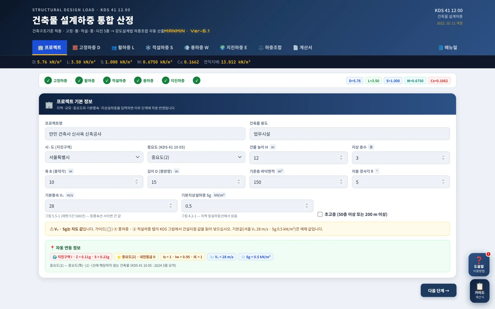
1234567- 1작업 탭 · 매뉴얼
- 2요약 스트립: D · L · S · W · Cs · 연직지배
- 3진행 표시 — 단계별 완료 ✓
- 4프로젝트명 · 건축물 용도
- 5지역 · 중요도 · 높이 · 층수
- 6기본풍속 V₀ · 기본지상설하중 Sg
- 7오른쪽 아래 「도움말」 · 「가이드」
| 영역 | 내용 |
|---|---|
| 헤더 · 탭 | 프로젝트 → 고정하중 D → 활하중 L → 적설하중 S → 풍하중 W → 지진하중 E → 하중조합 → 계산서, 오른쪽 끝 「📘 매뉴얼」 |
| 요약 스트립 | 어느 탭에 있든 현재 D · L · S · W · Cs와 연직 지배 하중을 한 줄로 보여 줍니다 |
| 본문 | 탭마다 입력 → 산정식 전개 → 결과 상자 → 근거 · 주의 안내 순서. 값을 바꾸면 모든 탭이 즉시 다시 계산됩니다 |
1-2. 작업 탭·근거 표시
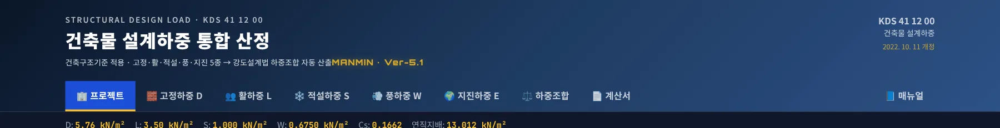
12345678910- 1프로젝트
- 2고정하중 D
- 3활하중 L
- 4적설하중 S
- 5풍하중 W
- 6지진하중 E
- 7하중조합
- 8계산서 — 인쇄 · PDF · JPG
- 9매뉴얼(이 문서)
- 10근거: KDS 41 12 00 건축물 설계하중 2022. 10. 11 개정
1-3. 설치·보관·매뉴얼
| 항목 | 내용 |
|---|---|
| 설치 | 주소창의 설치 아이콘 또는 휴대전화 「홈 화면에 추가」로 앱처럼 쓸 수 있습니다. 한 번 연 뒤에는 인터넷 없이도 산정됩니다(「도움말」 → 「📲 앱 설치」) |
| 결과 보관 | 산정 결과는 계산서 탭에서 A4 산정서(PDF · JPG)로 남기십시오. 화면을 닫으면 입력값은 남지 않습니다 |
| 매뉴얼 | 탭 막대 오른쪽 끝 「📘 매뉴얼」 — 인터넷 연결 시 새 창으로 열립니다. 좁은 화면에서는 탭 막대를 좌우로 밀면 보입니다 |
| 업데이트 | 새 버전이 올라오면 다음 접속 때 자동으로 바뀝니다. 화면 표기가 Ver-5.1이 아니면 새로 고침(Ctrl+F5) |
021분 따라하기
앱을 열면 예제 A가 기본값으로 들어 있습니다. 탭을 차례로 넘기며 아래 값이 나오는지 확인하십시오 — 연직 지배 조합은 식(1.7-2) 1.2D + 1.6L + 0.5(Lr 또는 S) = 13.012 kN/m²입니다.
- ① 프로젝트시 · 도 「서울특별시」, 중요도 「중요도(2)」, 높이 12 m · 3층, 폭 B 10 m · 깊이 D 15 m · 기준층 150 m² · 지붕 경사 5°, V₀ 28 m/s · Sg 0.5 kN/m² — 아래 자동 연동 정보에 지진구역 Ⅰ · Z 0.11g · S 0.22g, Is 1 · Iw 0.95 · IE 1이 나옵니다(3-1).
- ② 고정하중슬래브 · 마감 · 천장 4개 항목 합계 D = 5.76 kN/m²(3-2).
- ③ 활하중「사무실 / 일반 사무실」 L₀ 2.50 + 칸막이벽 1.00 → L = 3.50 kN/m²(3-3).
- ④ 적설하중Sf = 0.7 × 1 × 1 × 1 × 0.5 = 0.350 → 지붕 경사 15° 이하 최소설하중 1.0 적용, S = 1.000 kN/m²(3-4).
- ⑤ 풍하중간편법 적용범위 5개 항목 ✓ → 0.25 × 28² × 12^0.44 × 1.0 × 1.00 = 584.9 N/m² → 하한 적용 W = 0.6750 kN/m² · W_SF 81.00 kN(3-5).
- ⑥ 지진하중지반 S4 · RC 보통모멘트골조(R = 3) → SDS 0.4987g · SD1 0.2875g · 내진설계범주 D · Cs 0.1662 · W 3,042 kN · V 505.65 kN(3-6).
- ⑦ 하중조합 · 계산서연직 지배 식(1.7-2) 1.2D + 1.6L + 0.5(Lr 또는 S) = 13.012 kN/m²을 확인하고, 계산서 탭에서 「🖨️ 인쇄 · PDF」 또는 「🖼️ JPG 저장」(3-7 · 3-11).
| 항목 | 예제 A |
|---|---|
| 고정하중 D | 5.76 kN/m² |
| 활하중 L | 3.50 kN/m² (L₀ 2.50 + 칸막이 1.00) |
| 적설하중 S | 1.000 kN/m² (Sf 0.350 → 4.3.5 최소값) |
| 설계풍압 W | 0.6750 kN/m² (584.9 N/m² → 675 N/m²) |
| 지진 | Cs 0.1662 · W 3,042 kN · V 505.65 kN · 범주 D |
| 연직 지배 | 식(1.7-2) 1.2D + 1.6L + 0.5(Lr 또는 S) = 13.012 kN/m² |
03화면별 기능 상세
3-1. 프로젝트
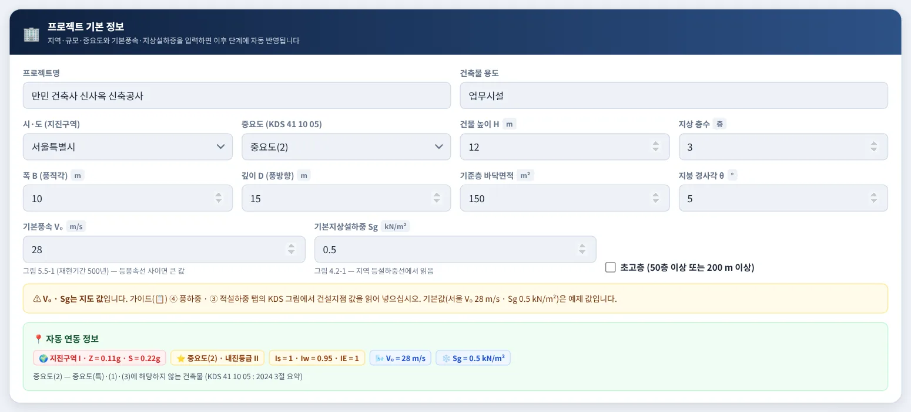
1234567- 1프로젝트명 · 건축물 용도(A4 표제)
- 2시 · 도(강원은 시 · 군) · 중요도 · 높이 · 층수
- 3평면 B · D · 기준층 바닥면적 · 지붕 경사각
- 4V₀(그림 5.5-1) · Sg(그림 4.2-1) · 초고층 여부
- 5V₀ · Sg 판독 근거(A4 Ⅰ절 표기)
- 6지도 판독 안내
- 7자동 연동 정보
| 항목 | 설명 |
|---|---|
| 시 · 도 / 시 · 군 | KDS 17 10 00 표 4.2-1로 지진구역을 정합니다. 강원특별자치도는 시 · 군을 골라야 구역이 정해집니다(북부 11개 시 · 군 Ⅱ, 남부 7개 시 Ⅰ) |
| 중요도 | KDS 41 10 05 : 2024 중요도 특 · 1 · 2 · 3 — 적설 Is · 풍 Iw · 지진 IE와 내진등급을 함께 정합니다(4-2) |
| 높이 · 층수 · 평면 | 높이 H는 풍하중(간편법)과 지진 Ta의 hn, 층수 · 기준층 면적은 유효 건물 중량 W에 쓰입니다. B는 풍직각 폭, D는 풍방향 깊이 |
| V₀ · Sg | 지도에서 판독해 직접 넣는 값입니다. 「가이드(📋)」의 ④ 풍하중 · ③ 적설하중 탭에 KDS 그림이 들어 있습니다. 등풍속선(등설선) 사이면 큰 값을 씁니다 |
| 판독 근거 | 어느 그림에서 어떤 등치선 · 구역으로 읽었는지 적어 두면 A4 산정서 Ⅰ절에 그대로 나옵니다(비우면 「미입력」) — 검토자가 판독값을 바로 확인할 수 있습니다 |
| 초고층 | 50층 이상 또는 200 m 이상이면 풍하중 중요도계수 Iw 1.05(표 5.5-5) |
3-2. 고정하중 D
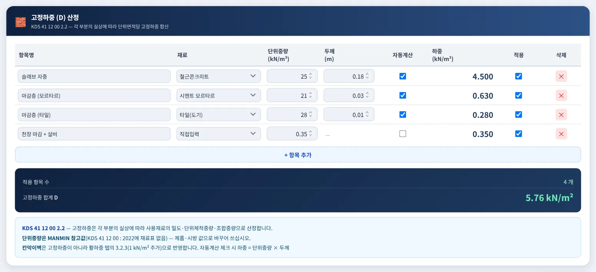
1234- 1고정하중 항목표
- 2항목 추가
- 3고정하중 합계 D
- 4근거 · 참고값 안내
항목마다 재료를 고르면 단위체적중량이 들어가고 두께를 곱해 kN/m²로 바꿉니다(「자동계산」을 끄면 kN/m²를 직접 입력). KDS 41 12 00 : 2022에는 재료 단위중량 표가 없으므로 목록 값은 MANMIN 참고값입니다 — 제품 · 시방 값으로 고쳐 쓰십시오. 칸막이벽은 v5.1.0부터 고정하중이 아니라 활하중(3.2.3)으로 넣습니다.
3-3. 활하중 L
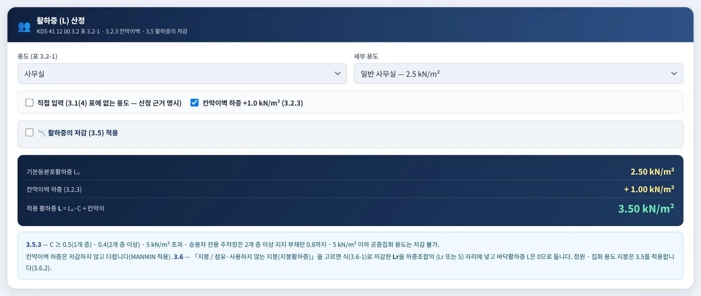
12345- 1용도(표 3.2-1)
- 2직접 입력 · 칸막이벽 +1.0 kN/m²
- 3활하중 저감(3.5)
- 4적용 활하중 L
- 5저감 제한(3.5.3)
| 항목 | 설명 |
|---|---|
| 용도 | 표 3.2-1의 용도 · 세부 용도를 고르면 기본등분포활하중 L₀가 들어갑니다. 표에 없는 용도는 「직접 입력」 — 산정 근거를 따로 남기십시오(3.1(4)) |
| 칸막이벽 | 가동성 경량칸막이벽이 설치될 수 있으면 +1 kN/m²(3.2.3). L₀가 4 kN/m² 이상이면 넣지 않아도 됩니다 |
| 활하중 저감 | 부재(기둥 · 기초 4 / 보 · 벽 2 / 슬래브 1)와 부하면적 A_T를 넣으면 영향면적 A = K_LL × A_T가 36 m² 이상일 때 C = 0.3 + 4.2/√A를 적용합니다(식 3.5-1) |
| 저감 제한 | C 하한 0.5(1개 층) · 0.4(2개 층 이상). L₀ 5 kN/m² 초과 · 승용차 전용 주차장은 2개 층 이상 지지할 때만 C 0.8, 공중집회 용도 5 kN/m² 이하는 저감하지 않습니다(3.5.3) |
| 지붕활하중 Lr | 「지붕 / 점유·사용하지 않는 지붕(지붕활하중)」을 고르면 지붕 산정으로 바뀝니다 — 저감을 켜고 부하면적 A_t를 넣으면 Lr = L₀ · R1 · R2(0.6 ~ 1.0, 식 3.6-1, 물매 F = tan θ). Lr은 하중조합의 (Lr 또는 S) 자리에 들어가고 바닥활하중 L은 0입니다. 정원 · 집회 지붕은 3.5를 적용합니다(3.6.2) |
3-4. 적설하중 S
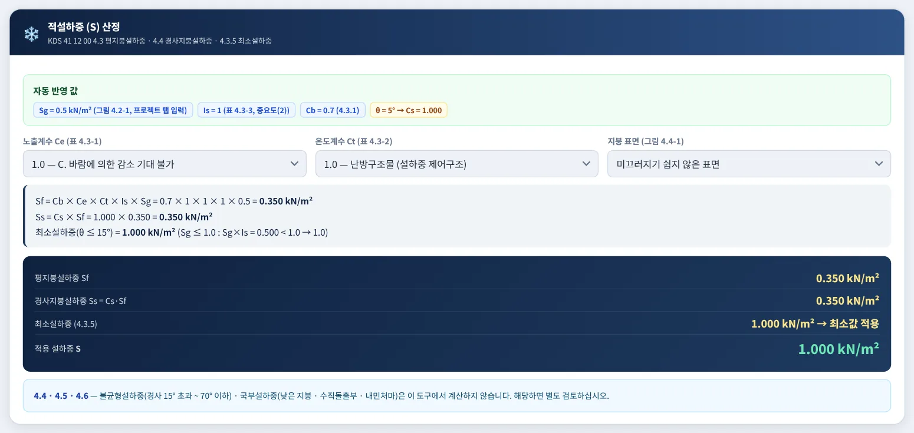
12345- 1자동 반영 값 Sg · Is · θ
- 2노출계수 Ce · 온도계수 Ct · 미끄러운 지붕
- 3산정식 전개
- 4Sf · Ss · 최소설하중 · 설계 S
- 5불균형 · 국부설하중 안내
평지붕설하중 Sf = Cb · Ce · Ct · Is · Sg(식 4.3-1, Cb 0.7), 경사지붕설하중 Ss = Cs · Sf(식 4.4-1)이며 Cs는 그림 4.4-1의 4개 선(난방 · 비난방 × 미끄러운 표면 여부)에서 지붕 경사로 읽습니다. 지붕 경사 15° 이하이면 최소설하중(4.3.5) — Sg ≤ 1.0이면 Sg · Is이되 1.0 이상, Sg > 1.0이면 1.0 · Is — 와 비교해 큰 값을 씁니다. 지붕 경사가 15° 초과 ~ 70° 이하이면 불균형설하중(4.5.1) — 바람 불어오는 쪽 0, 반대쪽 1.5Ss — 을 결과 상자에 따로 보여 줍니다. 하중조합의 S는 균형하중이며, 불균형하중은 부재 설계 때 별도로 재하합니다.
3-5. 풍하중 W
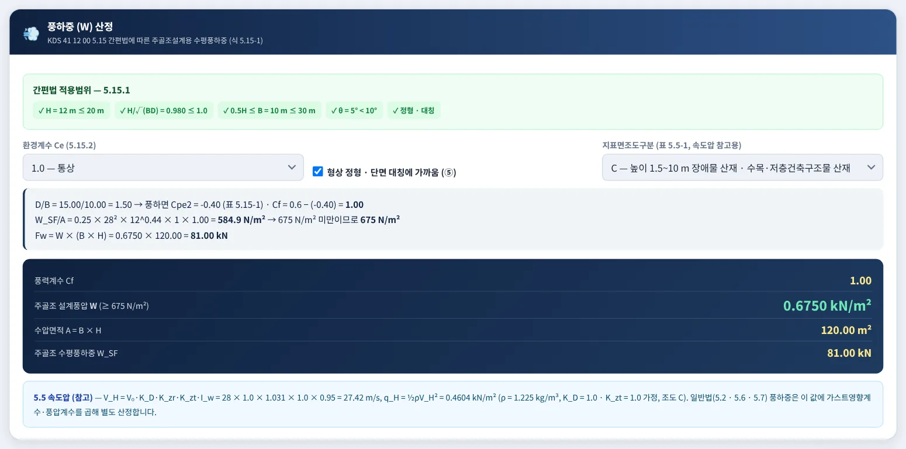
12345- 1간편법 적용범위(5.15.1)
- 2환경계수 Ce · 정형 여부 · 지표면조도
- 3산정식(식 5.15-1)
- 4설계풍압 W · 수평풍하중 W_SF
- 5속도압 q_H(참고)
| 항목 | 설명 |
|---|---|
| 적용범위 | H ≤ 20 m · H/√(BD) ≤ 1.0 · 0.5H ≤ B ≤ 30 m · 지붕 경사 10° 미만 · 형상 정형 — 하나라도 ✗이면 빨간 경고가 뜨고 간편법 값은 참고값이 됩니다 |
| 풍력계수 | Cf = 0.6 − Cpe2, Cpe2는 D/B ≤ 1이면 −0.5, D/B ≥ 2이면 −0.3, 그 사이 직선보간(표 5.15-1) |
| 설계풍압 | W_SF/A = 0.25 · V₀² · H^0.44 · Ce · Cf [N/m²], 하한 675 N/m² |
| 속도압(참고) | V_H = V₀ · K_zr · I_w(K_D = K_zt = 1.0 가정), q_H = ½ρV_H² — 일반법으로 따로 산정할 때의 출발값입니다 |
3-6. 지진하중 E
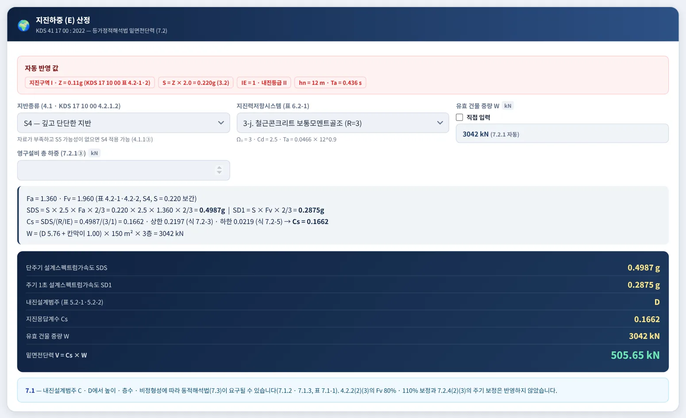
123456- 1지진구역 · Z · S · IE · hn · Ta
- 2지반종류 · 지진력저항시스템 · 유효 건물 중량
- 3영구설비 하중
- 4Fa · Fv · SDS · SD1 · Cs 전개
- 5내진설계범주 · Cs · W · V
- 6동적해석 · 미반영 조항 안내
| 항목 | 설명 |
|---|---|
| 지반종류 | S1 ~ S5(KDS 17 10 00 4.2.1.2). 자료가 부족하고 S5 가능성이 없으면 S4를 적용합니다 |
| 증폭계수 조정 | 4.2.2(2) 기반암 깊이 20 m 초과 · 평균 전단파속도 360 m/s 이상(S4) → Fv × 80%, 4.2.2(3) S5이고 기반암 깊이가 불분명 → Fa · Fv × 110% — 해당 지반에서만 체크할 수 있습니다 |
| 지진력저항시스템 | 표 6.2-1의 18개 시스템 — R · Ω₀ · Cd와 Ta 산정용 Ct · x가 함께 들어갑니다. 내진설계범주 C · D의 사용 불가 · 높이 제한을 넘으면 경고합니다 |
| 유효 건물 중량 W | 자동 산정(7.2.1) 또는 「직접 입력」. 영구설비 총 하중은 kN으로 더합니다 |
| 결과 | SDS · SD1 → 내진설계범주(표 5.2-1 · 5.2-2 중 높은 범주) → Cs(상 · 하한 비교) → V = Cs × W |
3-7. 하중조합
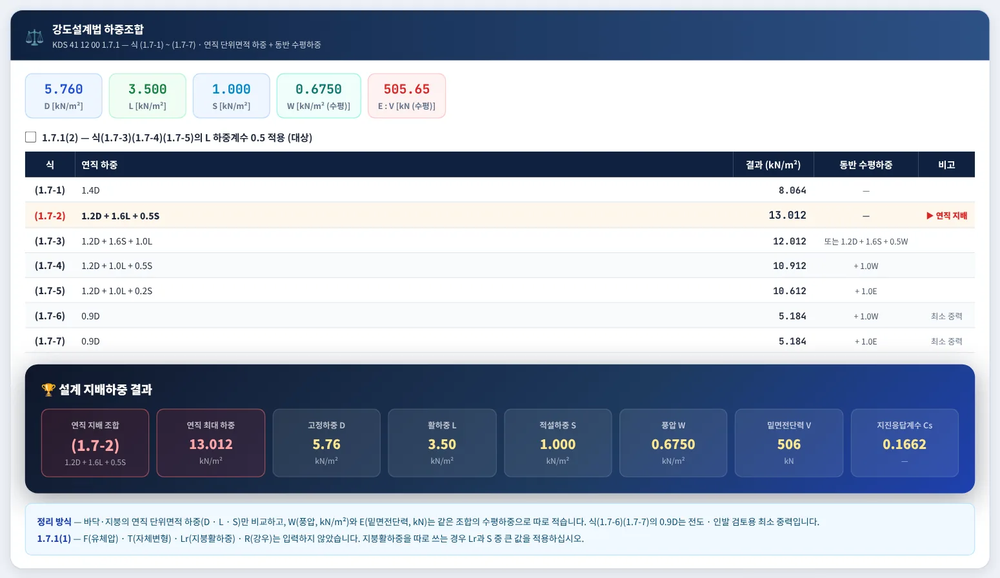
12345- 1D · L · S · W · E 요약
- 21.7.1(2) L 하중계수 0.5 선택
- 3식(1.7-1) ~ (1.7-7) 표
- 4연직 지배 조합
- 5정리 방식 안내
바닥 · 지붕의 연직 단위면적 하중(D · L · S)만 kN/m²로 더해 비교하고, 풍압 W(kN/m², 수평)와 밑면전단력 E(kN)는 단위와 방향이 달라 「동반 수평하중」 칸에 표시만 합니다. 종전 판처럼 W · E를 kN/m² 합에 더하지 않습니다. 「1.7.1(2)」를 켜면 식(1.7-3)(1.7-4)(1.7-5)의 L 계수가 0.5가 됩니다 — 주차장 · 공중집회 용도는 선택할 수 없습니다. 식(1.7-2)(1.7-3)(1.7-4)의 (Lr 또는 S)는 지붕활하중 Lr과 설하중 S 중 큰 값이며, 표 아래 안내에 어느 쪽이 쓰였는지 나옵니다.
3-8. 사례 — 학교 · 활하중 저감
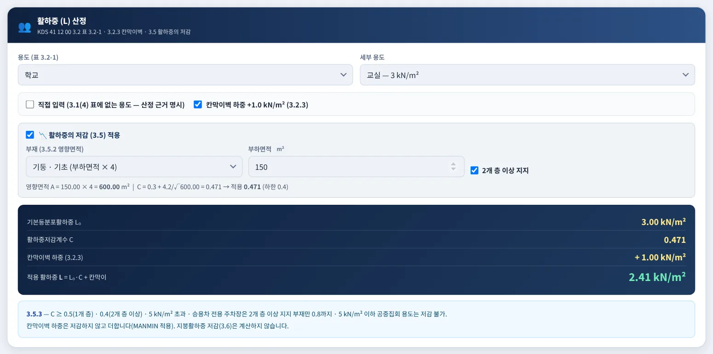
123- 1학교 · 교실 L₀ 3.0
- 2저감 — 기둥 · A_T 150 m² · 2개 층 이상
- 3L = L₀ · C + 칸막이
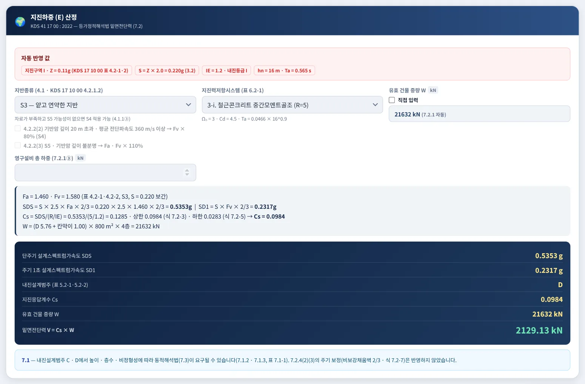
123- 1중요도(1) · IE 1.2 · 내진Ⅰ등급
- 2S3 · RC 중간모멘트골조
- 3Cs · V
기둥(K_LL 4) · 부하면적 150 m² → 영향면적 600 m², C = 0.3 + 4.2/√600 = 0.471(하한 0.4 이상) → L = 3.0 × 0.471 + 1.0 = 2.41 kN/m². 칸막이벽 하중은 저감하지 않고 더합니다. 학교는 중요도(1)이므로 Is 1.1 · Iw 1.00 · IE 1.2가 자동 반영되고, Cs는 상한 SD1/((R/IE)·Ta)가 지배해 Cs 0.0984 · V 2,129.13 kN입니다.
3-9. 사례 — 지진구역 Ⅱ 창고
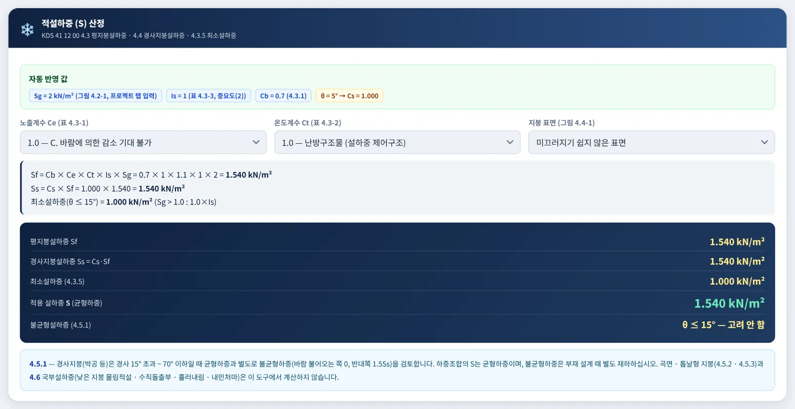
123- 1Sg 2.0(가정 입력값)
- 2Ct 1.1 — 비난방 구조물
- 3Sf 1.54 kN/m²
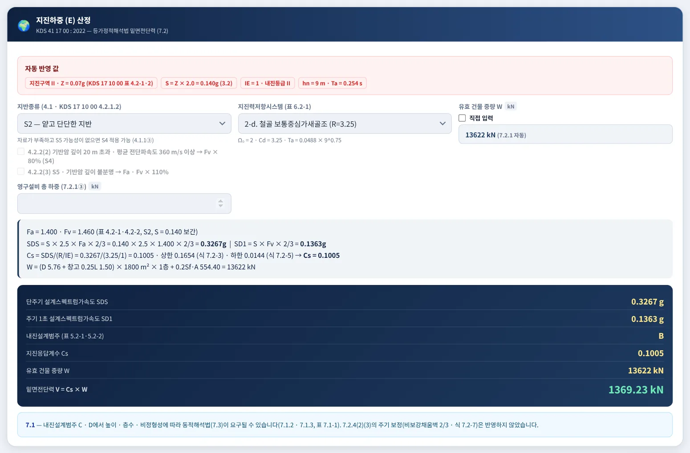
12- 1지진구역 Ⅱ · Z 0.07g · S 0.14g
- 2W — 창고 활하중 25% · 적설 20% 포함
춘천시는 KDS 17 10 00 표 4.2-1의 강원 북부로 지진구역 Ⅱ(Z 0.07)입니다. Sf = 0.7 × 1.0 × 1.1 × 1.0 × 2.0 = 1.54 kN/m²로 1.5를 넘으므로, 유효 건물 중량에 창고 활하중의 25%(1.50 kN/m²)와 함께 평지붕설하중의 20%(554.4 kN)가 들어갑니다(KDS 41 17 00 7.2.1) → W 13,622 kN · V 1,369.23 kN, SD1 0.1363g < 0.14이므로 내진설계범주 B. ※ B · C의 V₀ · Sg는 설명용 가정 입력값이며 실무에서는 그림에서 판독합니다.
3-10. 가이드·도움말 창
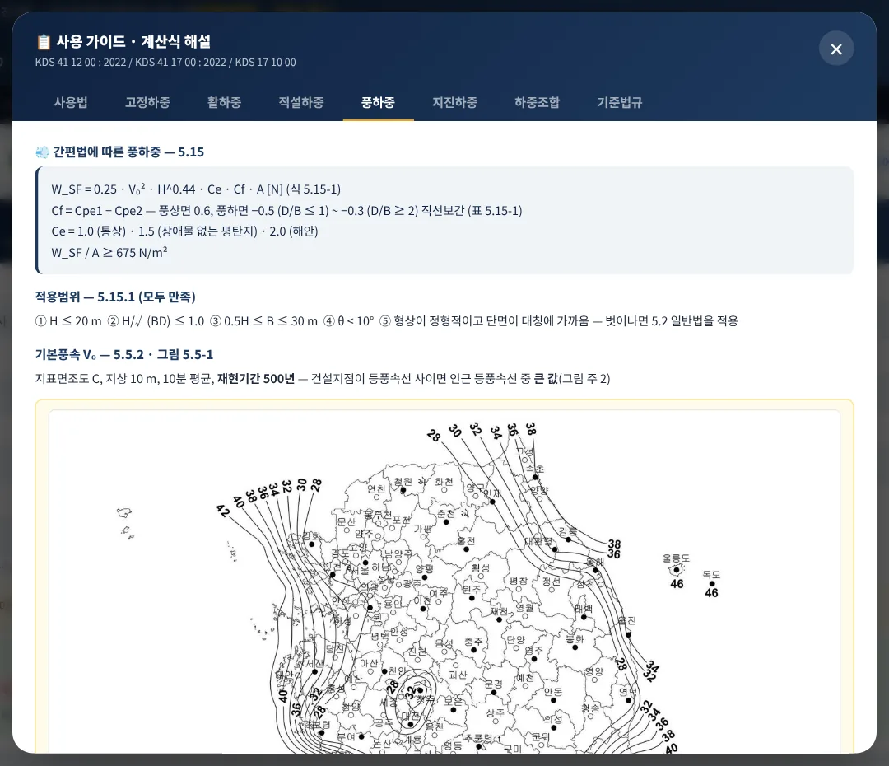
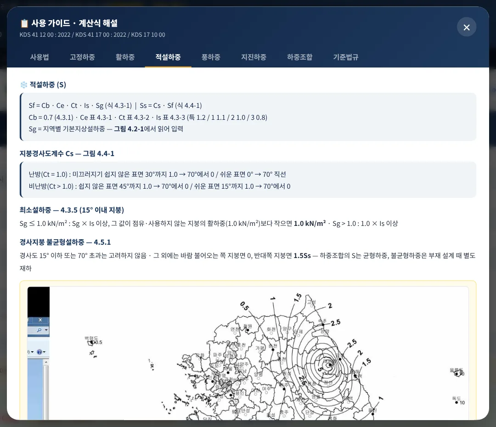
오른쪽 아래 「📋 가이드」는 하중별 계산식과 KDS 조항을 8개 탭(사용법 · 고정 · 활 · 적설 · 풍 · 지진 · 하중조합 · 기준법규)으로 정리한 창입니다. 풍하중 · 적설하중 탭에는 KDS 41 12 00 : 2022의 그림 5.5-1 기본풍속과 그림 4.2-1 기본지상설하중 원본이 들어 있어 V₀ · Sg를 바로 판독할 수 있습니다. 「❓ 도움말」은 이용 방법 · 관련 자료 · 앱 설치 안내입니다. 창은 ✕ 또는 Esc로 닫습니다.
3-11. A4 계산서·출력
- 1JPG 저장
- 2인쇄 · PDF
- 3A4 설계하중 통합 산정서
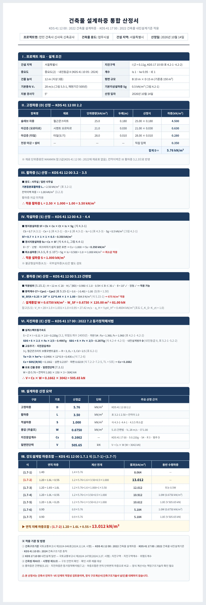
산정서는 Ⅰ 프로젝트 개요 · 설계 조건, Ⅱ 고정하중, Ⅲ 활하중, Ⅳ 적설하중, Ⅴ 풍하중, Ⅵ 지진하중, Ⅶ 설계하중 산정 요약, Ⅷ 강도설계법 하중조합, Ⅸ 적용 기준 9개 절이며, 화면과 같은 식 번호와 전개식을 담습니다. 프로젝트명 · 용도는 프로젝트 탭에서 넣습니다.
3-12. 휴대전화 화면
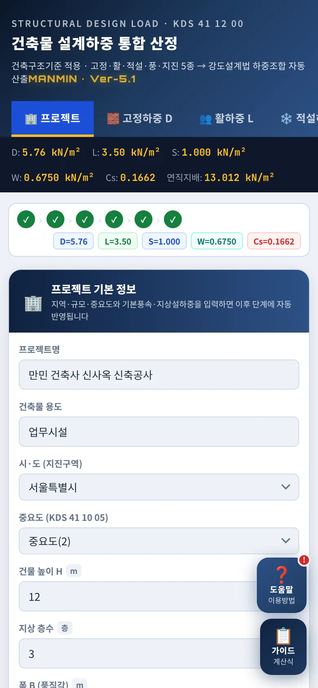
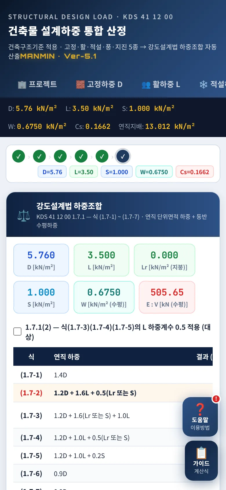
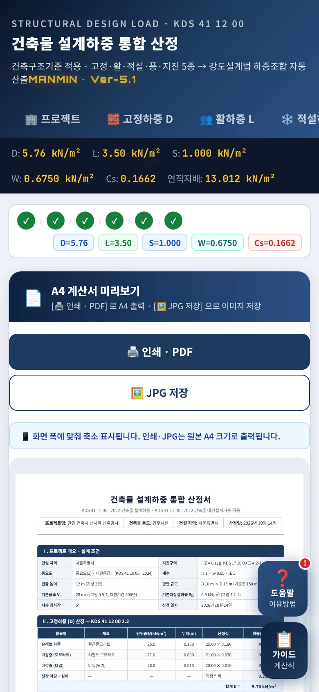
좁은 화면에서는 입력 칸이 한 줄로 쌓이고, 넓은 표(고정하중 · 하중조합)는 표 안에서 좌우로 밉니다. 계산서는 화면 폭에 맞춰 축소해 보여 주며 인쇄 · JPG는 원본 A4 크기로 나옵니다.
04기준 해설
4-1. 근거 체계
| 기준 | 내용 |
|---|---|
| 건축구조기준 | 국토교통부고시 제2024-846호(2024. 12. 24. 시행) — KDS 41 계열 건축구조기준을 고시로 정한 것 |
| KDS 41 12 00 : 2022 | 건축물 설계하중(2022. 10. 11. 개정) — 1.7 하중조합 · 2 고정하중 · 3 활하중 · 4 설하중 · 5 풍하중 |
| KDS 41 17 00 : 2022 | 건축물 내진설계기준(2022. 10. 11. 개정) — 3 유효지반가속도 · 4 지반 · 5 내진설계범주 · 6 지진력저항시스템 · 7 해석법 |
| KDS 41 10 05 : 2024 | 건축구조기준 총칙 — 중요도 분류(특 · 1 · 2 · 3) |
| KDS 17 10 00 | 내진설계 일반(국토교통부고시 제2024-147호, 2024. 3. 27. 시행) — 표 4.2-1 지진구역 · 4.2-2 지진구역계수 · 4.2-3 위험도계수 · 4.2.1.2 지반분류 |
고시 첨부 원문 PDF 대조 2026-10-14 · KDS 원문은 국가건설기준센터(kcsc.re.kr)에서 열람할 수 있습니다.
4-2. 중요도와 계수
| 중요도 | Is (표 4.3-3) | Iw (표 5.5-5) | IE (KDS 41 17 00 표 2.2-1) | 내진등급 |
|---|---|---|---|---|
| 특 | 1.2 | 1.00 | 1.5 | 내진특등급 |
| 1 | 1.1 | 1.00 | 1.2 | 내진Ⅰ등급 |
| 2 | 1.0 | 0.95 | 1.0 | 내진Ⅱ등급 |
| 3 | 0.8 | 0.90 | 1.0 | 내진Ⅱ등급 |
초고층(50층 이상 또는 200 m 이상)은 Iw 1.05입니다. 중요도는 KDS 41 10 05 : 2024의 분류로 사용자가 고릅니다 — 학교 · 5층 이상 아파트 등은 1, 종합병원 · 소방서 등은 특입니다.
4-3. 지진구역·유효지반가속도
| 지진구역 | 행정구역(KDS 17 10 00 표 4.2-1) | Z (표 4.2-2) |
|---|---|---|
| Ⅰ | 특별시 · 광역시 · 세종, 경기 · 충북 · 충남 · 경북 · 경남 · 전북 · 전남, 강원 남부(영월 · 정선 · 삼척 · 강릉 · 동해 · 원주 · 태백) | 0.11 |
| Ⅱ | 강원 북부(홍천 · 철원 · 화천 · 횡성 · 평창 · 양구 · 인제 · 고성 · 양양 · 춘천 · 속초), 제주 | 0.07 |
4-4. 설계스펙트럼·Cs
4.2.2(2) — 기반암 깊이 20 m 초과 · 평균 전단파속도 360 m/s 이상이면 표 4.2-2 Fv의 80%, 4.2.2(3) — S5이고 기반암 깊이가 불분명하면 Fa · Fv의 110%를 적용합니다. 내진설계범주는 표 5.2-1(SDS: 0.17 · 0.33 · 0.50)과 표 5.2-2(SD1: 0.07 · 0.14 · 0.20)로 각각 정해 높은 범주를 씁니다. 내진특등급은 한 단계 높게 분류됩니다.
4-5. 유효 건물 중량 W
| 포함 항목 | KDS 41 17 00 7.2.1 |
|---|---|
| 고정하중 | 전체 고정하중(D × 기준층 면적 × 층수) |
| 창고 | 창고 용도 바닥활하중의 25% 이상 |
| 칸막이벽 | 칸막이벽 하중을 넣었으면 실제 하중과 0.5 kN/m² 중 큰 값 |
| 영구설비 | 영구설비의 총 하중(직접 입력, kN) |
| 적설 | 평지붕설하중 Sf가 1.5 kN/m²를 넘으면 Sf의 20%(지붕 면적) |
종전 판의 「D + 0.5L」은 기준에 없는 방식이어서 v5.1.0에서 바로잡았습니다. 일반 활하중은 W에 넣지 않습니다.
4-6. 풍하중 간편법
기본풍속 V₀는 그림 5.5-1(지표면조도 C, 지상 10 m, 10분 평균, 재현기간 500년)에서 읽습니다. 적용범위를 벗어나면 5.2 이하 일반법(가스트영향계수 · 외압계수 · 지형계수)으로 산정해야 하며 이 도구는 참고 속도압만 보여 줍니다.
4-7. 적설하중
| 지붕 조건 | 경사도계수 Cs(그림 4.4-1) |
|---|---|
| 난방 · 미끄러운 표면 | 0° → 70° 사이 1.0 → 0 직선 |
| 난방 · 그 밖의 표면 | 30° 이하 1.0, 30° → 70° 직선 |
| 비난방 · 미끄러운 표면 | 15° 이하 1.0, 15° → 70° 직선 |
| 비난방 · 그 밖의 표면 | 45° 이하 1.0, 45° → 70° 직선 |
불균형설하중(4.5.1) — 경사 15° 이하 또는 70° 초과 지붕은 고려하지 않고, 그 외에는 바람 불어오는 쪽 지붕면 0 · 반대쪽 지붕면 1.5Ss를 재하합니다(그림 4.5-1). 곡면(4.5.2) · 톱날형(4.5.3) 지붕과 국부설하중(4.6)은 이 도구의 범위 밖입니다.
4-8. 활하중·저감
칸막이벽 하중(3.2.3)은 활하중으로 +1 kN/m²를 더합니다. 지붕활하중은 3.5가 아니라 3.6으로 저감하며, 정원 · 집회 용도 지붕은 3.5를 적용합니다(3.6.2).
4-9. 하중조합
| 식 | 연직 하중 | 동반 수평하중 |
|---|---|---|
| (1.7-1) | 1.4D | — |
| (1.7-2) | 1.2D + 1.6L + 0.5(Lr 또는 S) | — |
| (1.7-3) | 1.2D + 1.6(Lr 또는 S) + 1.0L | 또는 1.2D + 1.6(Lr 또는 S) + 0.5W |
| (1.7-4) | 1.2D + 1.0L + 0.5(Lr 또는 S) | + 1.0W |
| (1.7-5) | 1.2D + 1.0L + 0.2S | + 1.0E |
| (1.7-6) | 0.9D | + 1.0W |
| (1.7-7) | 0.9D | + 1.0E |
KDS 41 12 00 1.7.1 강도설계법 하중조합 가운데 이 도구가 다루는 D · L · Lr · S · W · E 항만 정리한 것입니다(R · F · H · T 항은 생략). 1.7.1(2)에 따라 식(1.7-3)(1.7-4)(1.7-5)의 L 계수는 0.5로 할 수 있으나, 주차장 · 공중집회 용도는 제외됩니다. 식(1.7-6)(1.7-7)은 전도 · 인발 검토용 최소 연직하중입니다.
4-10. 산정 범위·한계
| 항목 | 내용 |
|---|---|
| 산정하는 것 | 고정하중 합산, 표 3.2-1 활하중 · 칸막이 · 3.5 저감 · 3.6 지붕활하중 저감, 평지붕 · 경사지붕 · 최소설하중 · 4.5.1 경사지붕 불균형설하중, 5.15 간편법 풍하중, 4.2.2(2)(3) 증폭계수 조정 · 등가정적해석법 Cs · V, 식(1.7-1) ~ (1.7-7) |
| 산정하지 않는 것 | 곡면 · 톱날형 지붕 불균형설하중(4.5.2 · 4.5.3) · 국부설하중(4.6), 풍하중 일반법 · 외장재 풍압, 7.2.4(2)(3) 주기 보정, 동적해석(7.3), 층별 지진력 분배 · 비틀림, 수직지진력 |
| 사용자 판단값 | V₀ · Sg 지도 판독, 지반종류, 중요도, 지진력저항시스템, 재료 단위중량(MANMIN 참고값) |
4-11. v5.1.0 정정 (2026-10-14)
| 항목 | 기존 | 정정 |
|---|---|---|
| 유효지반가속도 | S = Z | S = Z × 2.0 (위험도계수) |
| 지반 · 증폭계수 | SA ~ SE, 구 표 | S1 ~ S5, 표 4.2-1 · 4.2-2 보간 |
| Cs 하한 · TL | 0.01·IE, 4초 | 0.044·SDS·IE ≥ 0.01, 5초 |
| 유효 건물 중량 | D + 0.5L | 7.2.1 (창고 25% · 칸막이 · 설비 · 적설 20%) |
| 지진구역 | 제주만 Ⅱ | 강원 북부 11개 시 · 군 + 제주 Ⅱ |
| 풍하중 | 구 속도압 × G · Cf | 5.15 간편법 · 적용범위 · 675 N/m² |
| 기본풍속 · Sg | 지역 대표값 자동 | 그림 판독 직접 입력(그림 내장) |
| 풍 중요도계수 | 1.1 · 1.0 · 1.0 · 0.95 | 1.00 · 1.00 · 0.95 · 0.90 (초고층 1.05) |
| 최소설하중 | Sg · Is, 경사 무관 | 15° 이하 · 1.0 하한 |
| 경사도계수 | 30 ~ 70° 1개 선 | 그림 4.4-1 4개 선 |
| 활하중 저감 | 구식 · 37.16 m² | 식 3.5-1 · 36 m² · 3.5.3 제한 |
| 칸막이벽 | 고정하중 1.0 | 활하중 +1.0 (3.2.3) |
| 하중조합 | W · E를 kN/m²에 합산 | 연직만 비교 · W · E 동반 표시 · 식 번호 원문 |
| 지붕활하중 | 3.6 미산정 | 식 3.6-1 Lr = L₀R1R2 · (Lr 또는 S) 큰 값 |
| 불균형설하중 | 미산정 | 4.5.1 경사 15° 초과 ~ 70° 이하 1.5Ss 표시 |
| 증폭계수 조정 | 미반영 | 4.2.2(2) Fv 80% · (3) S5 Fa · Fv 110% |
| 판독 근거 | 없음 | V₀ · Sg 판독 근거 입력 → A4 Ⅰ절 |
| 오프라인 캐시 | sw 프리캐시 주소 버전 불일치 | index와 같은 버전 고정 주소 4종 |
예전 판으로 만든 산정서는 다시 산정하십시오. 특히 지진하중(S가 2배)과 강원 북부 지역, 적설 · 풍하중 값이 달라집니다. 엔진은 화면 · A4 · 검증이 같은 코드를 쓰며, 별도로 짠 독립 구현과 무작위 50,000건을 대조해 불일치 0건을 확인했습니다.
05실무 작업 방법
5-1. 단계별 절차
| 단계 | 내용 |
|---|---|
| ① 조건 정리 | 건설지점(시 · 군), 용도 · 중요도, 높이 · 층수 · 평면, 지붕 형태 · 난방 여부, 지반조사 결과(지반종류)를 정리합니다 |
| ② 지도 판독 | 「가이드」 그림 5.5-1 · 4.2-1에서 V₀ · Sg를 읽어 넣습니다 — 등치선 사이면 큰 값 |
| ③ 하중 산정 | 탭 순서대로 D · L · S · W · E를 확인하고, 적용범위 경고(빨간 글씨)가 있으면 해당 하중을 별도 검토합니다 |
| ④ 조합 확인 | 연직 지배 조합으로 바닥 · 지붕 부재 예비 검토, 수평하중 W_SF · V는 골조 해석 입력값으로 넘깁니다 |
| ⑤ 출력 | A4 산정서를 PDF로 남겨 구조계산서 · 협의 자료에 붙입니다 |
5-2. 구조설계 전 확인
| 항목 | 확인 |
|---|---|
| 내진설계 대상 | 건축법 시행령 제32조 제2항 대상 여부는 MANMIN 「내진설계 의무대상 판정기」로 확인 |
| 일반법 필요 | 높이 20 m 초과 · 세장 · 비정형 건축물은 풍하중 일반법, 내진설계범주 C · D의 고층 · 비정형 건축물은 동적해석 요구 여부 확인(KDS 41 17 00 7.1) |
| 지붕 적설 | 경사지붕 · 단차 지붕 · 돌출부가 있으면 불균형 · 국부설하중(4.5 · 4.6) 별도 산정 |
| 구조기술사 협력 | 건축법 시행령 제91조의3 협력 대상 여부를 따로 확인 |
06문제 해결·FAQ
| 증상 | 해결 |
|---|---|
| 지진구역이 「—」로 나와요 | 강원특별자치도는 시 · 군을 골라야 구역이 정해집니다 |
| V₀ · Sg를 모르겠어요 | 「📋 가이드」 → ④ 풍하중 · ③ 적설하중 탭의 KDS 그림에서 건설지점 값을 읽으십시오(3-10) |
| 적설하중이 계산보다 커요 | 지붕 경사 15° 이하에서는 최소설하중 1.0 kN/m²(4.3.5)가 적용됩니다(4-7) |
| 풍압이 675로 고정돼요 | 식 5.15-1 값이 하한 675 N/m²보다 작으면 하한을 씁니다 |
| 풍하중에 빨간 경고가 떠요 | 간편법 적용범위(5.15.1)를 벗어났습니다 — 일반법으로 따로 산정하십시오 |
| 활하중 저감이 안 돼요 | 영향면적 36 m² 미만이거나 3.5.3 제한 용도(공중집회 · 5 kN/m² 초과 · 승용차 주차장 1개 층)입니다 |
| 지붕인데 L이 0이에요 | 지붕활하중을 고르면 Lr로 계산해 하중조합의 (Lr 또는 S)에 넣고 바닥활하중 L은 0으로 둡니다(4-8) |
| 박공지붕 불균형하중은요 | 경사 15° 초과 ~ 70° 이하이면 적설 탭에 1.5Ss가 따로 나옵니다 — 부재 설계 때 별도 재하하십시오(4-7) |
| 하중조합에 W · E가 더해지지 않아요 | 단위 · 방향이 달라 동반 수평하중으로만 표시합니다(3-7) |
| 예전 판과 값이 달라요 | v5.1.0에서 KDS 원문대로 정정했습니다(4-11) |
| 화면이 예전 판이에요 | 새로 고침(Ctrl+F5) 또는 앱을 닫았다 다시 여십시오 |
부록
A1. 예제 입력값
| 예제 | 입력 |
|---|---|
| 예제 A | 서울특별시 · 중요도(2) · H 12 m · 3층 · B 10 × D 15 m · 기준층 150 m² · θ 5° · V₀ 28 · Sg 0.5 · 사무실/일반 사무실 · 칸막이 · Ct 1.0 · 지반 S4 · RC 보통모멘트골조 |
| 예제 B | 전북특별자치도 · 중요도(1) · H 16 m · 4층 · B 20 × D 40 m · 기준층 800 m² · θ 5° · V₀ 30 · Sg 0.8 · 학교/교실 · 칸막이, 저감(기둥 · A_T 150 m² · 2개 층 이상) · Ct 1.0 · 지반 S3 · RC 중간모멘트골조 |
| 예제 C | 강원특별자치도 춘천시 · 중요도(2) · H 9 m · 1층 · B 30 × D 60 m · 기준층 1800 m² · θ 5° · V₀ 28 · Sg 2.0 · 창고/경량품 저장창고 · Ct 1.1 · 지반 S2 · 철골 보통중심가새골조 |
예제 B · C의 V₀ · Sg는 매뉴얼 설명용 가정 입력값입니다. 고정하중은 세 예제 모두 기본 4개 항목(D 5.76 kN/m²)입니다.
A2. 예제 결과
| 예제 | D | L | S | W | 구역 · 범주 | Cs | W (kN) | V (kN) | 연직 지배 |
|---|---|---|---|---|---|---|---|---|---|
| 예제 A | 5.76 | 3.50 | 1.000 | 0.6750 | I · D | 0.1662 | 3,042 | 505.65 | (1.7-2) 13.012 |
| 예제 B | 5.76 | 2.41 | 1.000 | 0.6859 | I · D | 0.0984 | 21,632 | 2,129.13 | (1.7-2) 11.275 |
| 예제 C | 5.76 | 6.00 | 1.540 | 0.6750 | II · B | 0.1005 | 13,622 | 1,369.23 | (1.7-2) 17.282 |
A3. 버전 변경 내역
| 버전 | 내용 |
|---|---|
| Ver-5.1 · v5.1.0 (2026-10-14) | KDS 원문 대조 판정 · 계산 전면 정정(4-11), 3.6 지붕활하중 · 4.5.1 불균형설하중 · 4.2.2 증폭계수 조정 · 판독 근거 칸 추가, 엔진 단일화 · 독립 검증, KDS 그림 5.5-1 · 4.2-1 내장, 탭 막대 「📘 매뉴얼」 · 사용자 매뉴얼 |
| Ver-5.0 · v5.0.11 (2026-09) | 도움말 · 가이드 창 높이 통일 |
| Ver-5.0 (2026-08 ~ 09) | MANMIN 디자인 통일(헤더 · 탭 · 요약 스트립), A4 계산서 · JPG 저장, PWA |
A4. 용어
| 용어 | 뜻 |
|---|---|
| 기본풍속 V₀ | 지표면조도 C, 지상 10 m에서 10분 평균, 재현기간 500년 풍속(그림 5.5-1) |
| 기본지상설하중 Sg | 설하중 산정의 기본이 되는 지상 적설하중(그림 4.2-1) |
| 유효지반가속도 S | 지진구역계수 Z × 위험도계수 I(2400년 2.0) |
| SDS · SD1 | 단주기 · 주기 1초 설계스펙트럼가속도 |
| 내진설계범주 | SDS · SD1과 내진등급으로 정하는 A ~ D 범주(표 5.2-1 · 5.2-2) |
| 반응수정계수 R | 지진력저항시스템의 연성 · 초과강도를 반영한 계수(표 6.2-1) |
| 영향면적 | 부재의 하중 영향 범위 — 부하면적 × K_LL(3.5) |
| 동반 수평하중 | 하중조합 식에서 연직 하중과 함께 작용하는 W · E 항 |